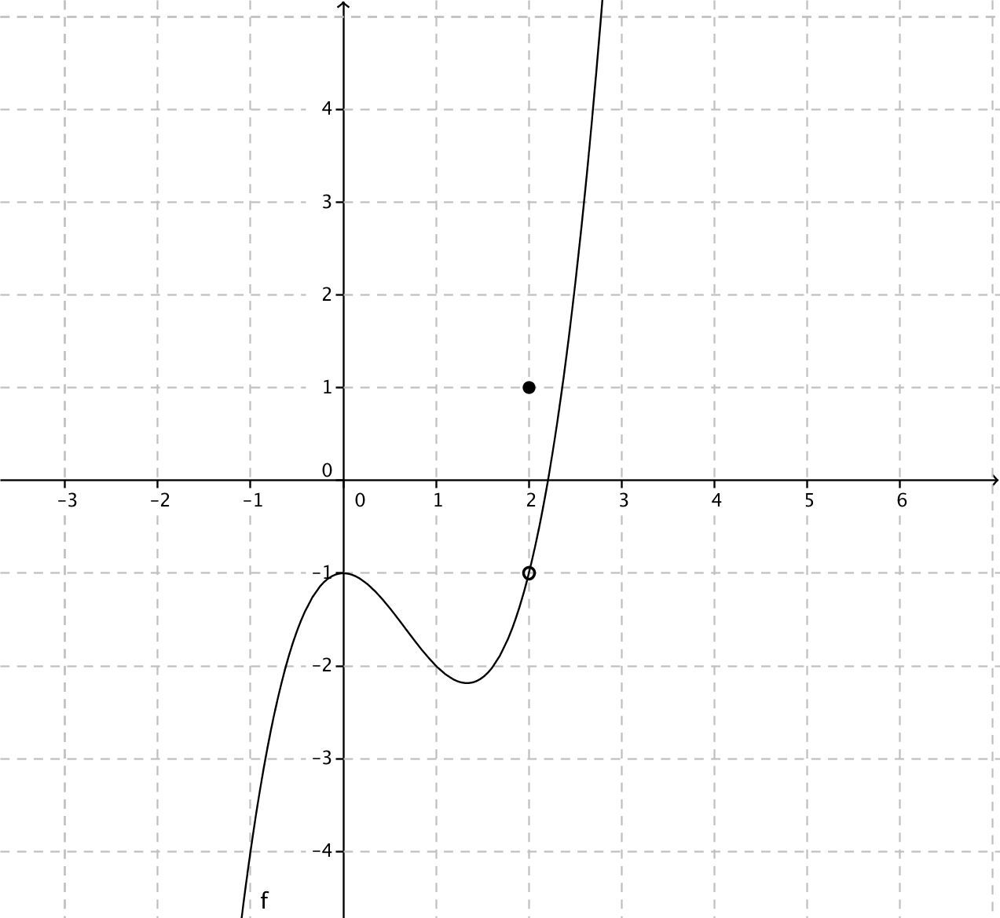
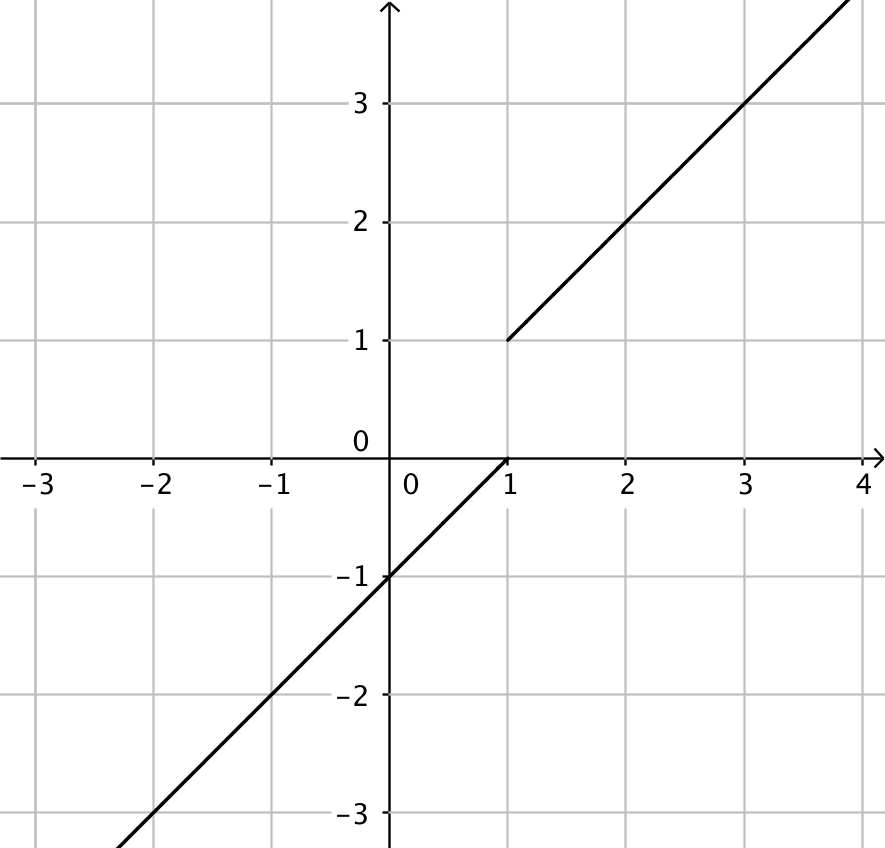
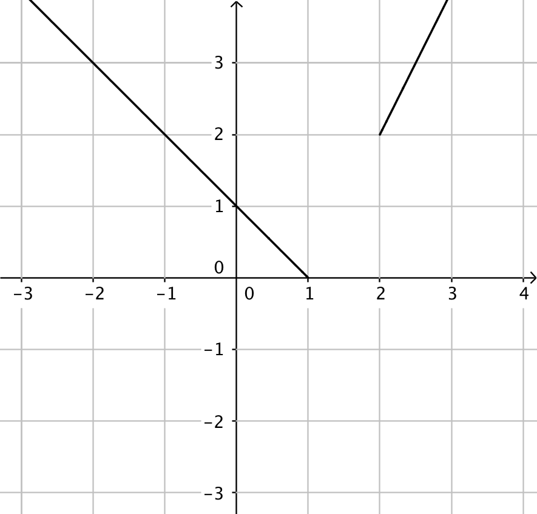
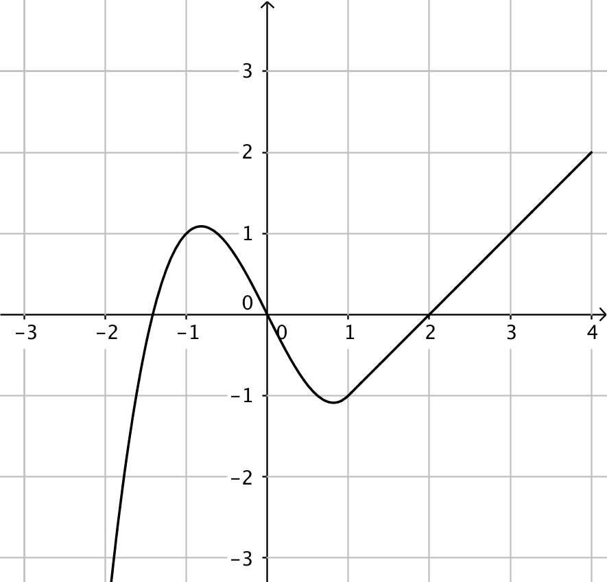

4. Kontinuitet hos en funktion
Vi undersöker kontinuiteten hos funktionen
\(f(x)= \left\{ \begin{array}{ll} x & \textrm{ , då } x<-1 \\ x^2-2 & \textrm{ , då } x\geq -1 \\ \end{array}\right.\)
Funktionen \(f\) består av två delar och ser ut som följande:

Polynomfunktionerna \(x\) och \(x^2-2\) är kontinuerliga. Den punkt som intresserar oss är skarven, då \(x=-1\). Frågan som vi ställer oss är: kan vi röra oss från väster och höger över skarvpunkten utan att falla ner genom ett hål i funktionen?
Vi tar och undersöker gränsvärdet i punkten \(x=-1\) genom att närma oss den från vänster och höger.
Från vänster får vi gränsvärdet\(\lim_{x \to -1_{-}} f(x)= \lim_{x \to -1_{-}} x = -1\)
och från höger \(\lim_{x \to -1_{+}} f(x)= \lim_{x \to -1_{+}} x^2-2 = (-1)^2-2 =-1\) .
Vi har samma gränsvärde i punkten \(x=-1\). För att ännu försäkra oss att funktionen är kontinuerlig bildar vi funktionsvärdet, \(f(-1) = (-1)^2-2 =-1\).
Eftersom alla tre har samma värde är funktionen kontinuerlig i \(x=-1\). Vi kan dra slutsatsen att \(f\) är kontinuerlig.
För att en funktion, \(f\) skall var kontinuerlig i en punkt, \(a\) skall
\(\lim_{x \to a} f(x) = f(a)\).
Eftersom vi kan bilda gränsvärdet från höger och vänster kan vi skriva det som är ovan som
\(\lim_{x \to a_{-}} f(x) = \lim_{x \to a_{+}} f(x)=f(a)\).
Exemepl 1 Är funktionen
\(f(x)= \left\{ \begin{array}{ll} 1 & \textrm{, då } x=2 \\ x^3-2x^2-1 & \textrm{, annars } \\ \end{array}\right.\)
kontiunerlig i de reella talen?
Lösning
Funktionen består av en polynomfunktion, \(x^3-2x^2-1\), som är kontinuerlig. Vi undersöker punkten \(x=2\) genom att bilda gränsvärdena och jämföra dem med funktionsvärdet.
Gränsvärdet i punkten 2 är \(\lim_{x \to 2_{-}} f(x)= \lim_{x \to 2_{-}}x^3-2x^2-1 = 2^3 -2\cdot 2^2-1 = -1\) och \(\lim_{x \to 2_{+}} f(x)= \lim_{x \to 2_{+}}x^3-2x^2-1 = 2^3 -2\cdot 2^2-1 = -1\).
Funktionsvärdet är \(f(2)=1\). Eftersom \(\lim_{x \to 2} f(x) \not= f(2)\) så är funktionen inte kontinuerlig i de reella talen.

Exempel 2 Rita funktionen \(f(x)= \mid x^2-1 \mid\) och undersök om den är kontinuerlig.
VIDEO KOMMER
Uppgifter
- Är funktionerna kontinuerliga eller inte kontinerliga?
Påstående Kontinuerlig Inte kontinuerlig (disskontinuerlig)  

  
Tänk att du cyklar. Cyklar du på en kontinerlig funktion faller du inte igenom, det finns inga hål i funktionen. Cyklar du på en inte kontinerlig funktion faller du igenom.
Påstående Kontinuerlig Inte kontinuerlig (disskontinuerlig) < - Ändra på värdet för \(a\) genom att föra glidaren till vänster och höger. För vilket värde på \(a\) är funktionen
\(f(x)= \left\{ \begin{array}{ll} -x +3 & \textrm{ , då } x\leq 2 \\ x+a & \textrm{ , då } x> 2 \\ \end{array}\right.\)
kontinuerlig?
Då \(a=-1\).
- Ersätt \(a\) med det värde du fick ovan och visa sedan att funktionen i uppgiften är kontinuerlig genom att bilda gränsvärdet och funktionsvärdet i skarvpunkten.
\(\lim_{x \to 2_{-}} f(x) = \lim_{x \to 2_{+}} f(x) = f(2) = 1\)
- Ersätt \(a\) med det värde du fick ovan och visa sedan att funktionen i uppgiften är kontinuerlig genom att bilda gränsvärdet och funktionsvärdet i skarvpunkten.
- Ändra på värdet för \(a\) genom att föra glidaren till vänster och höger. För vilket värde på \(a\) är funktionen
\(f(x)= \left\{ \begin{array}{ll} -x^2 +3 & \textrm{ , då } x<1 \\ x+a & \textrm{ , då } x\geq 1 \\ \end{array}\right.\)
kontinuerlig?
Då \(a=1\).
- Ersätt \(a\) med det värde du fick ovan och visa sedan att funktionen i uppgiften är kontinuerlig genom att bilda gränsvärdet och funktionsvärdet i skarvpunkten.
\(\lim_{x \to 1_{-}} f(x) = \lim_{x \to 1_{+}} f(x) = f(1) = 2\).
- Ersätt \(a\) med det värde du fick ovan och visa sedan att funktionen i uppgiften är kontinuerlig genom att bilda gränsvärdet och funktionsvärdet i skarvpunkten.
Välj rätt svar för påståendet. Det finns endast 1 st rätt formulering.
För att en funktion skall vara kontinuerlig i en punkt \(x_0\) gäller att
1. \(\lim_{x \to x_{0_{-}}} f(x)=\lim_{x \to x_{0_{+}}} f(x)\) 2. \(\lim_{x \to x_{0_{-}}} f(x)=\lim_{x \to x_{0_{+}}}f(x) = f(x_0)\) 3. \(\lim_{x \to x_{0_{-}}} f(x) = f(x_0)\) 4. \(\lim_{x \to x_{0_{-}}} f(x)=\lim_{x \to x_{0_{+}}} f(x)= f(x)\) Rätt svar är 2, \(\lim_{x \to x_{0_{-}}} f(x)=\lim_{x \to x_{0_{+}}}f(x) = f(x_0)\).
- Är funktionen
\(f(x)= \left\{ \begin{array}{ll} x^2-1 & \textrm{, då } x<2 \\ -x+5 & \textrm{, då } x \geq 2 \\ \end{array}\right.\)
kontinuerlig i de reella talen?
Jo, \(\lim_{x \to 2_{-}} f(x) = \lim_{x \to 2_{+}} f(x) = f(2) = 3\).
- Är funktionen
\(f(x)= \left\{ \begin{array}{ll} 2x-1 & \textrm{, då } x<2 \\ \frac{1}{2}x^2 & \textrm{, då } x \geq 2 \\ \end{array}\right.\)
kontinuerlig i de reella talen?
Nej, \(\lim_{x \to 2_{-}} f(x) = 3 \not= \lim_{x \to 2_{+}} f(x) = f(2) = 2\).
- För vilket värde på \(a\) är funktionen
\(f(x)= \left\{ \begin{array}{ll} 2x-1 & \textrm{, då } x<2 \\ \frac{1}{2}x^2+a & \textrm{, då } x \geq 2 \\ \end{array}\right.\)
kontinuerlig?
Bilda uttrycken \(\lim_{x \to 2_{-}} f(x)\), \(\lim_{x \to 2_{+}} f(x)\) och \(f(2)\) och se till att uttrycken skall ha samma värde.
\(\lim_{x\to 2_{-}} 2x-1 = 2(2)-1=3\)
\(\lim_{x\to 2_{+}} \frac{1}{2}x^2+a = \frac{1}{2}\cdot 2^2+a = 2+a\)
\(f(2)=\frac{1}{2}\cdot 2^2+a = 2+a\)
Dessa skall ha samma värde, \(3=2+a\), alltså \(a=1\).
- För vilket värde på \(a\) gäller att
\(f(x)=\left\{ \begin{array}{ll} x+a & , x\geq -1 \\ -2x^2+1 & ,x<-1 \\ \end{array} \right.\)
är kontinuerlig?
\(f\) är kontinerlig då
\(\lim_{x\to -1_{-}} f(x) =\lim_{x\to -1_{-}} -2x^2+1 = -2(-1)^2+1 = -1\),
\(\lim_{x\to -1_{+}} f(x) =\lim_{x\to -1_{+}} x+a = -1+a\),
\(f(-1) = -1+a\).
Alltså \(-1+a=-1 \Leftrightarrow a=0\).
- För vilket värde på \(a\) är funktionen
\(f(x)= \left\{ \begin{array}{ll} x^2+a & \textrm{, då } x<-1 \\ x^3-x & \textrm{, då } x \geq -1 \\ \end{array}\right.\)
kontinuerlig?
\(\lim_{x \to -1_{-}} x^2+a = (-1)^2+a = 1+a\)\(\lim_{x \to -1_{+}} x^3-x = (-1)^3-(-1) = 0\).
\(f(-1)=(-1)^3-(-1) = 0\).
Dessa skall ha samma värde \(1+a=0\), alltså \(a=-1\).
Visa att \(f\) är kontinuerlig oberoende värdet på \(a\)
\(f(x)= \left\{ \begin{array}{ll} x + a & x \geq 1 \\ ax^2 + 1 & x<1\\ \end{array} \right.\)
Vi får
\(\lim_{x \to 1_{-}}ax^2+1 = a+1\) och
\(\lim_{x \to 1_{+}}x+a = 1+a\).
\(f(1)=1+a\). Alltså får vi alltid samma uttryck oberoende av \(a\).
- Visa att \(f(x)=\mid x-2 \mid\) är kontinuerlig.
Nollstället för \(x-2\) är \(x=2\).
Vi får att
\(\mid x-2 \mid =\left\{ \begin{array}{ll} x-2 & , x\geq 2 \\ -(x-2) & , x< 2 \\ \end{array} \right.\)
som vi kan skriva som
\(f(x) =\left\{ \begin{array}{ll} x-2 & , x\geq 2 \\ -x+2 & , x< 2 \\ \end{array} \right.\).
Kontinuiteten undersöker vi i \(x=2\) .
\(\lim_{x \to 2_{-}} f(x)= \lim_{x \to 2_{-}} -x+2 = -2+2 = 0\),
\(\lim_{x \to 2_{+}} f(x)= \lim_{x \to 2_{+}} x-2 = 2-2 = 0\) och
\(f(2)= 2-2 =0\).
Eftersom \(\lim_{x \to 2_{-}} f(x) = \lim_{x \to 2_{+}} f(x) = f(2)\) är \(f\) kontinuerlig.
- Visa att \(f(x)=\mid x^2-x \mid\) är kontinuerlig.
Eftersom vi har ett absolutbelopp måste vi skriva det utan absolutbelopp för att kunna analysera funktionen. \(x^2-x\) har nollställena \(x=0\) och \(x=1\). Vi skriver funktionen som
\(f(x)=\left\{ \begin{array}{ll} x^2-x & , \text{annars} \\ -(x^2-x) & ,\text{då } 0\leq x \leq 1 \\ \end{array} \right.\).
Vi måste undersöka kontinuiteten i bägge skarvarna.
I \(x=0\) får vi
\(\lim_{x\to 0_{-}} x^2-x = 0\),
\(\lim_{x\to 0_{+}} -(x^2-x) = 0\) och
\(f(0) = -(0^2-0) =0\).
I \(x=1\) får vi
\(\lim_{x\to 1_{-}} -(x^2-x) = -(1^2-1)=0\),
\(\lim_{x\to 0_{+}} x^2-x =1^2-1= 0\) och
\(f(1) = -(1^2-1) =0\).
Alltså är \(f\) kontinuerlig i bägge skarvpunkterna och kontinuerlig överallt.
- Visa att \(f(x)=\mid x^2+a \mid\) är kontinuerlig oberoende av värdet på \(a\).
Dela upp i fall beroende på \(a\) och undersök kontinuiteten för alla fall.
Vi börjar med att söka nollställen för absolutbeloppet, \(x^2+a=0 \Leftrightarrow x^2=-a\).
Då \(a>0\) saknas nollställen för absolutbeloppet och vi får att \(f(x)=\mid x^2+a\mid = x^2+a\).
Då \(a=0\) har vi att \(f(x)=\mid x^2\mid =x^2\).
Då \(a<0\) gäller att
\(f(x)=\left\{ \begin{array}{ll} x^2+a, & \text{annars}\\ -(x^2+a), & -\sqrt{\mid -a\mid } \leq x \leq \sqrt{\mid -a\mid }\\ \end{array} \right.\).
Eftersom \(a<0\) gäller följande:
\(f(x)=\left\{ \begin{array}{ll} x^2-a, & \text{annars}\\ -x^2+a, & -\sqrt{a} \leq x \leq \sqrt{a}\\ \end{array} \right.\).
Kontinuiteten måste vi undersöka i \(-\sqrt{a}\) och i \(\sqrt{a}\).
I \(-\sqrt{a}\) gäller följande
\(\lim_{x \to-\sqrt{a}_{-}} x^2-a = (-\sqrt{a})^2-a=0\),
\(\lim_{x \to-\sqrt{a}_{+}} x^2-a = -(\sqrt{a})^2+a=0\) och
\(f(-\sqrt{a})=-(\sqrt{a})^2+a=0\).
I \(\sqrt{a}\) gäller följande
\(\lim_{x \to\sqrt{a}_{-}} x^2-a = -(\sqrt{a})^2+a=0\),
\(\lim_{x \to\sqrt{a}_{+}} x^2-a = (-\sqrt{a})^2-a=0\) och
\(f(\sqrt{a})=-(\sqrt{a})^2+a=0\).
\(f\) är alltså kontinuerlig oberende värdet på \(a\).